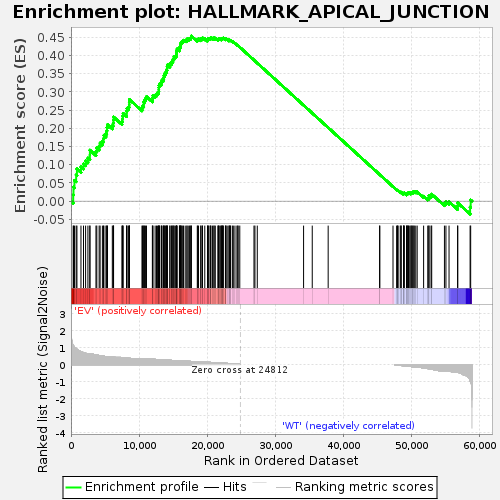

| | | Dataset | EV_WT_express.EV_WT.cls#EV_versus_WT |
| Phenotype | EV_WT.cls#EV_versus_WT |
| Upregulated in class | EV |
| GeneSet | HALLMARK_APICAL_JUNCTION |
| Enrichment Score (ES) | 0.45386857 |
| Normalized Enrichment Score (NES) | 1.2614309 |
| Nominal p-value | 0.026612077 |
| FDR q-value | 0.24948238 |
| FWER p-Value | 0.918 |
Table: GSEA Results Summary

Fig 1: Enrichment plot: HALLMARK_APICAL_JUNCTION
Profile of the Running ES Score & Positions of GeneSet Members on the Rank Ordered List
| SYMBOL | TITLE | RANK IN GENE LIST | RANK METRIC SCORE | RUNNING ES | CORE ENRICHMENT | | 1 | CADM2 | NNN | 322 | 1.091 | 0.0172 | Yes |
| 2 | CLDN5 | NNN | 364 | 1.078 | 0.0388 | Yes |
| 3 | NEGR1 | NNN | 507 | 1.006 | 0.0573 | Yes |
| 4 | ATP1A3 | NNN | 754 | 0.922 | 0.0723 | Yes |
| 5 | CALB2 | NNN | 870 | 0.887 | 0.0887 | Yes |
| 6 | ACTN3 | NNN | 1462 | 0.748 | 0.0942 | Yes |
| 7 | INSIG1 | NNN | 1833 | 0.698 | 0.1024 | Yes |
| 8 | NRTN | NNN | 2142 | 0.658 | 0.1108 | Yes |
| 9 | ITGA9 | NNN | 2482 | 0.646 | 0.1184 | Yes |
| 10 | RAC2 | NNN | 2770 | 0.642 | 0.1268 | Yes |
| 11 | COL9A1 | NNN | 2773 | 0.642 | 0.1401 | Yes |
| 12 | CD34 | NNN | 3663 | 0.569 | 0.1368 | Yes |
| 13 | CD274 | NNN | 3787 | 0.560 | 0.1463 | Yes |
| 14 | ALOX15B | NNN | 4129 | 0.532 | 0.1515 | Yes |
| 15 | AMIGO2 | NNN | 4271 | 0.520 | 0.1599 | Yes |
| 16 | NLGN3 | NNN | 4606 | 0.499 | 0.1646 | Yes |
| 17 | CLDN14 | NNN | 4771 | 0.489 | 0.1719 | Yes |
| 18 | MMP9 | NNN | 4829 | 0.484 | 0.1810 | Yes |
| 19 | ADRA1B | NNN | 5127 | 0.466 | 0.1856 | Yes |
| 20 | BMP1 | NNN | 5246 | 0.462 | 0.1932 | Yes |
| 21 | CDH11 | NNN | 5279 | 0.460 | 0.2022 | Yes |
| 22 | PCDH1 | NNN | 5357 | 0.455 | 0.2103 | Yes |
| 23 | AMH | NNN | 6062 | 0.440 | 0.2075 | Yes |
| 24 | MPZL2 | NNN | 6190 | 0.434 | 0.2143 | Yes |
| 25 | CDH1 | NNN | 6229 | 0.433 | 0.2226 | Yes |
| 26 | KCNH2 | NNN | 6246 | 0.432 | 0.2313 | Yes |
| 27 | CRAT | NNN | 7469 | 0.409 | 0.2190 | Yes |
| 28 | ACTA1 | NNN | 7569 | 0.404 | 0.2257 | Yes |
| 29 | SRC | NNN | 7580 | 0.404 | 0.2339 | Yes |
| 30 | DMP1 | NNN | 7649 | 0.401 | 0.2411 | Yes |
| 31 | PDZD3 | NNN | 8163 | 0.380 | 0.2402 | Yes |
| 32 | SHROOM2 | NNN | 8164 | 0.380 | 0.2481 | Yes |
| 33 | PIK3CB | NNN | 8213 | 0.378 | 0.2551 | Yes |
| 34 | PIK3R3 | NNN | 8461 | 0.367 | 0.2585 | Yes |
| 35 | AMIGO1 | NNN | 8545 | 0.363 | 0.2647 | Yes |
| 36 | MYH10 | NNN | 8549 | 0.363 | 0.2721 | Yes |
| 37 | CAP1 | NNN | 8569 | 0.363 | 0.2794 | Yes |
| 38 | ADAMTS5 | NNN | 10416 | 0.357 | 0.2553 | Yes |
| 39 | JAM3 | NNN | 10486 | 0.354 | 0.2615 | Yes |
| 40 | CLDN18 | NNN | 10673 | 0.348 | 0.2655 | Yes |
| 41 | YWHAH | NNN | 10677 | 0.348 | 0.2727 | Yes |
| 42 | ACTB | NNN | 10796 | 0.343 | 0.2778 | Yes |
| 43 | MMP2 | NNN | 10942 | 0.343 | 0.2824 | Yes |
| 44 | JUP | NNN | 11074 | 0.340 | 0.2873 | Yes |
| 45 | MAPK11 | NNN | 11936 | 0.312 | 0.2790 | Yes |
| 46 | MPZL1 | NNN | 11980 | 0.311 | 0.2848 | Yes |
| 47 | GAMT | NNN | 12025 | 0.309 | 0.2904 | Yes |
| 48 | PTK2 | NNN | 12344 | 0.300 | 0.2912 | Yes |
| 49 | CERCAM | NNN | 12547 | 0.296 | 0.2939 | Yes |
| 50 | SYK | NNN | 12679 | 0.293 | 0.2978 | Yes |
| 51 | SKAP2 | NNN | 12851 | 0.288 | 0.3009 | Yes |
| 52 | VAV2 | NNN | 12885 | 0.286 | 0.3062 | Yes |
| 53 | PPP2R2C | NNN | 12889 | 0.286 | 0.3121 | Yes |
| 54 | SHC1 | NNN | 12912 | 0.286 | 0.3177 | Yes |
| 55 | RSU1 | NNN | 12989 | 0.284 | 0.3223 | Yes |
| 56 | TMEM8B | NNN | 13237 | 0.278 | 0.3238 | Yes |
| 57 | ICAM1 | NNN | 13273 | 0.276 | 0.3290 | Yes |
| 58 | ACTG1 | NNN | 13365 | 0.275 | 0.3331 | Yes |
| 59 | VCL | NNN | 13584 | 0.268 | 0.3350 | Yes |
| 60 | TJP1 | NNN | 13609 | 0.267 | 0.3401 | Yes |
| 61 | ACTN2 | NNN | 13653 | 0.266 | 0.3449 | Yes |
| 62 | TGFBI | NNN | 13691 | 0.265 | 0.3498 | Yes |
| 63 | CTNNA1 | NNN | 13886 | 0.260 | 0.3518 | Yes |
| 64 | SORBS3 | NNN | 13951 | 0.259 | 0.3561 | Yes |
| 65 | SIRPA | NNN | 14007 | 0.257 | 0.3605 | Yes |
| 66 | NLGN2 | NNN | 14105 | 0.254 | 0.3642 | Yes |
| 67 | TRAF1 | NNN | 14109 | 0.254 | 0.3694 | Yes |
| 68 | MYL12B | NNN | 14133 | 0.254 | 0.3743 | Yes |
| 69 | PKD1 | NNN | 14506 | 0.248 | 0.3731 | Yes |
| 70 | MSN | NNN | 14515 | 0.248 | 0.3781 | Yes |
| 71 | MAPK14 | NNN | 14732 | 0.242 | 0.3794 | Yes |
| 72 | GRB7 | NNN | 14804 | 0.240 | 0.3832 | Yes |
| 73 | EXOC4 | NNN | 14940 | 0.237 | 0.3858 | Yes |
| 74 | GNAI2 | NNN | 14970 | 0.236 | 0.3902 | Yes |
| 75 | B4GALT1 | NNN | 15106 | 0.233 | 0.3927 | Yes |
| 76 | TUBG1 | NNN | 15124 | 0.232 | 0.3973 | Yes |
| 77 | NRXN2 | NNN | 15353 | 0.231 | 0.3982 | Yes |
| 78 | ITGA2 | NNN | 15458 | 0.229 | 0.4011 | Yes |
| 79 | CX3CL1 | NNN | 15473 | 0.228 | 0.4056 | Yes |
| 80 | LAMC2 | NNN | 15497 | 0.228 | 0.4100 | Yes |
| 81 | VWF | NNN | 15521 | 0.227 | 0.4143 | Yes |
| 82 | CTNND1 | NNN | 15568 | 0.226 | 0.4182 | Yes |
| 83 | PARVA | NNN | 15906 | 0.218 | 0.4170 | Yes |
| 84 | ACTN1 | NNN | 15922 | 0.218 | 0.4213 | Yes |
| 85 | PFN1 | NNN | 16001 | 0.216 | 0.4244 | Yes |
| 86 | IRS1 | NNN | 16060 | 0.215 | 0.4279 | Yes |
| 87 | NF2 | NNN | 16098 | 0.214 | 0.4317 | Yes |
| 88 | ITGB4 | NNN | 16147 | 0.213 | 0.4353 | Yes |
| 89 | NFASC | NNN | 16250 | 0.210 | 0.4379 | Yes |
| 90 | AKT2 | NNN | 16392 | 0.207 | 0.4398 | Yes |
| 91 | CD276 | NNN | 16513 | 0.206 | 0.4421 | Yes |
| 92 | DLG1 | NNN | 16756 | 0.200 | 0.4421 | Yes |
| 93 | PTPRC | NNN | 17009 | 0.194 | 0.4418 | Yes |
| 94 | LDLRAP1 | NNN | 17028 | 0.194 | 0.4455 | Yes |
| 95 | ARPC2 | NNN | 17279 | 0.188 | 0.4452 | Yes |
| 96 | SDC3 | NNN | 17402 | 0.185 | 0.4470 | Yes |
| 97 | ACTN4 | NNN | 17565 | 0.181 | 0.4479 | Yes |
| 98 | PECAM1 | NNN | 17625 | 0.179 | 0.4507 | Yes |
| 99 | CLDN9 | NNN | 17655 | 0.178 | 0.4539 | Yes |
| 100 | ADAM15 | NNN | 18529 | 0.164 | 0.4424 | No |
| 101 | ADAM9 | NNN | 18586 | 0.163 | 0.4448 | No |
| 102 | FSCN1 | NNN | 18710 | 0.162 | 0.4461 | No |
| 103 | CLDN6 | NNN | 19036 | 0.154 | 0.4437 | No |
| 104 | MAPK13 | NNN | 19069 | 0.153 | 0.4464 | No |
| 105 | CNN2 | NNN | 19260 | 0.149 | 0.4462 | No |
| 106 | PARD6G | NNN | 19296 | 0.149 | 0.4487 | No |
| 107 | EPB41L2 | NNN | 19628 | 0.141 | 0.4460 | No |
| 108 | WNK4 | NNN | 20029 | 0.132 | 0.4419 | No |
| 109 | TIAL1 | NNN | 20071 | 0.131 | 0.4439 | No |
| 110 | NF1 | NNN | 20108 | 0.130 | 0.4460 | No |
| 111 | LAMB3 | NNN | 20209 | 0.128 | 0.4470 | No |
| 112 | LAMA3 | NNN | 20415 | 0.125 | 0.4461 | No |
| 113 | MYH9 | NNN | 20496 | 0.123 | 0.4473 | No |
| 114 | ITGB1 | NNN | 20522 | 0.122 | 0.4494 | No |
| 115 | CDH15 | NNN | 20771 | 0.117 | 0.4476 | No |
| 116 | HADH | NNN | 20976 | 0.112 | 0.4464 | No |
| 117 | SYMPK | NNN | 20987 | 0.111 | 0.4486 | No |
| 118 | IKBKG | NNN | 21170 | 0.108 | 0.4477 | No |
| 119 | GTF2F1 | NNN | 21567 | 0.099 | 0.4430 | No |
| 120 | BAIAP2 | NNN | 21600 | 0.098 | 0.4445 | No |
| 121 | CLDN11 | NNN | 21634 | 0.097 | 0.4459 | No |
| 122 | HRAS | NNN | 21749 | 0.094 | 0.4460 | No |
| 123 | MVD | NNN | 21906 | 0.091 | 0.4452 | No |
| 124 | AKT3 | NNN | 22050 | 0.087 | 0.4446 | No |
| 125 | PBX2 | NNN | 22098 | 0.087 | 0.4456 | No |
| 126 | INPPL1 | NNN | 22200 | 0.085 | 0.4456 | No |
| 127 | VCAN | NNN | 22215 | 0.085 | 0.4471 | No |
| 128 | EGFR | NNN | 22298 | 0.083 | 0.4474 | No |
| 129 | MAP4K2 | NNN | 22353 | 0.081 | 0.4482 | No |
| 130 | PTEN | NNN | 22656 | 0.073 | 0.4446 | No |
| 131 | RASA1 | NNN | 22722 | 0.071 | 0.4449 | No |
| 132 | TSC1 | NNN | 22726 | 0.071 | 0.4464 | No |
| 133 | RRAS | NNN | 22914 | 0.066 | 0.4446 | No |
| 134 | CD99 | NNN | 23179 | 0.060 | 0.4413 | No |
| 135 | ICAM5 | NNN | 23224 | 0.058 | 0.4418 | No |
| 136 | CDH6 | NNN | 23226 | 0.058 | 0.4430 | No |
| 137 | TAOK2 | NNN | 23382 | 0.054 | 0.4414 | No |
| 138 | CRB3 | NNN | 23421 | 0.053 | 0.4419 | No |
| 139 | STX4 | NNN | 23678 | 0.046 | 0.4385 | No |
| 140 | SPEG | NNN | 23812 | 0.042 | 0.4371 | No |
| 141 | LIMA1 | NNN | 24055 | 0.034 | 0.4336 | No |
| 142 | FBN1 | NNN | 24346 | 0.024 | 0.4292 | No |
| 143 | CDH3 | NNN | 24476 | 0.019 | 0.4274 | No |
| 144 | THBS3 | NNN | 24515 | 0.017 | 0.4271 | No |
| 145 | CLDN15 | NNN | 24764 | 0.004 | 0.4230 | No |
| 146 | NEXN | NNN | 26847 | 0.000 | 0.3874 | No |
| 147 | VCAM1 | NNN | 26986 | 0.000 | 0.3851 | No |
| 148 | CADM3 | NNN | 27332 | 0.000 | 0.3792 | No |
| 149 | CDH8 | NNN | 34125 | 0.000 | 0.2634 | No |
| 150 | DSC1 | NNN | 35396 | 0.000 | 0.2417 | No |
| 151 | ADAM23 | NNN | 37732 | 0.000 | 0.2019 | No |
| 152 | CD209 | NNN | 45276 | 0.000 | 0.0733 | No |
| 153 | ICAM4 | NNN | 45312 | 0.000 | 0.0727 | No |
| 154 | CLDN8 | NNN | 47245 | 0.000 | 0.0397 | No |
| 155 | ZYX | NNN | 47776 | -0.019 | 0.0311 | No |
| 156 | WASL | NNN | 47894 | -0.026 | 0.0296 | No |
| 157 | CDK8 | NNN | 47932 | -0.027 | 0.0296 | No |
| 158 | TSPAN4 | NNN | 47989 | -0.030 | 0.0292 | No |
| 159 | ITGA3 | NNN | 48307 | -0.045 | 0.0248 | No |
| 160 | VASP | NNN | 48426 | -0.050 | 0.0238 | No |
| 161 | PLCG1 | NNN | 48440 | -0.051 | 0.0246 | No |
| 162 | FLNC | NNN | 48789 | -0.067 | 0.0201 | No |
| 163 | ITGA10 | NNN | 48819 | -0.068 | 0.0210 | No |
| 164 | CLDN19 | NNN | 48852 | -0.069 | 0.0219 | No |
| 165 | DHX16 | NNN | 48893 | -0.071 | 0.0227 | No |
| 166 | EVL | NNN | 49231 | -0.085 | 0.0187 | No |
| 167 | ARHGEF6 | NNN | 49282 | -0.087 | 0.0196 | No |
| 168 | CDSN | NNN | 49303 | -0.088 | 0.0211 | No |
| 169 | NRAP | NNN | 49415 | -0.094 | 0.0212 | No |
| 170 | SGCE | NNN | 49451 | -0.094 | 0.0226 | No |
| 171 | MDK | NNN | 49522 | -0.099 | 0.0234 | No |
| 172 | CD86 | NNN | 49702 | -0.105 | 0.0226 | No |
| 173 | ACTG2 | NNN | 49874 | -0.113 | 0.0220 | No |
| 174 | CLDN4 | NNN | 49917 | -0.116 | 0.0237 | No |
| 175 | CNTN1 | NNN | 50045 | -0.120 | 0.0240 | No |
| 176 | COL16A1 | NNN | 50146 | -0.125 | 0.0249 | No |
| 177 | CDH4 | NNN | 50296 | -0.129 | 0.0250 | No |
| 178 | MYL9 | NNN | 50362 | -0.133 | 0.0267 | No |
| 179 | GNAI1 | NNN | 50586 | -0.144 | 0.0259 | No |
| 180 | RHOF | NNN | 50792 | -0.154 | 0.0256 | No |
| 181 | TRO | NNN | 51737 | -0.197 | 0.0136 | No |
| 182 | KRT31 | NNN | 52346 | -0.232 | 0.0080 | No |
| 183 | SLIT2 | NNN | 52509 | -0.242 | 0.0103 | No |
| 184 | ICAM2 | NNN | 52522 | -0.243 | 0.0151 | No |
| 185 | SLC30A3 | NNN | 52827 | -0.260 | 0.0153 | No |
| 186 | THY1 | NNN | 52923 | -0.267 | 0.0192 | No |
| 187 | LAYN | NNN | 54791 | -0.357 | -0.0052 | No |
| 188 | ACTC1 | NNN | 55010 | -0.357 | -0.0015 | No |
| 189 | CLDN7 | NNN | 55467 | -0.370 | -0.0016 | No |
| 190 | DSC3 | NNN | 56722 | -0.448 | -0.0137 | No |
| 191 | TNFRSF11B | NNN | 56747 | -0.451 | -0.0047 | No |
| 192 | COL17A1 | NNN | 58557 | -0.935 | -0.0161 | No |
| 193 | MADCAM1 | NNN | 58642 | -1.000 | 0.0032 | No |
Table: GSEA details [plain text format]
Fig 2: HALLMARK_APICAL_JUNCTION
Blue-Pink O' Gram in the Space of the Analyzed GeneSet
Fig 3: HALLMARK_APICAL_JUNCTION: Random ES distribution
Gene set null distribution of ES for HALLMARK_APICAL_JUNCTION